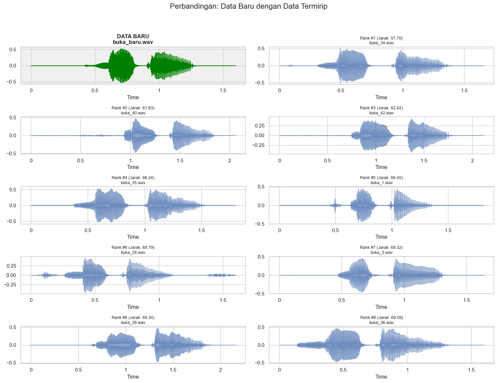

Menghitung jarak antara data lama (buka tutup) masing masing 100 data dengan data baru 1 data menggunakan Dynamic Time Warping (DTW)#
Suara Buka#
Import Library#
import numpy as np
import pandas as pd
import matplotlib.pyplot as plt
import seaborn as sns
import librosa
import librosa.display
import glob
import os
from fastdtw import fastdtw
from scipy.spatial.distance import euclidean
from tqdm.notebook import tqdm
import IPython.display as ipd
sns.set(style="whitegrid")
plt.rcParams['figure.figsize'] = (15, 5)
print("Libraries siap digunakan.")
Libraries siap digunakan.
Load Data “BUKA” & Visualisasi Waveform#
DATASET_PATH = "dataset/"
TARGET_SR = 22050
# Load file BUKA
files_buka = glob.glob(os.path.join(DATASET_PATH, "**", "buka", "*.wav"), recursive=True)
print(f"Total file referensi 'BUKA' dimuat: {len(files_buka)}")
# Visualisasi Data
fig, axes = plt.subplots(5, 2, figsize=(15, 12))
fig.suptitle('Visualisasi Waveform: 10 Data Referensi "BUKA"', fontsize=16)
axes = axes.flatten()
for i in range(10):
if i < len(files_buka):
y, sr = librosa.load(files_buka[i], sr=TARGET_SR)
librosa.display.waveshow(y, sr=sr, ax=axes[i], alpha=0.7)
axes[i].set_title(f"Ref Buka #{i+1}: {os.path.basename(files_buka[i])}", fontsize=10)
axes[i].set_xlabel("")
axes[i].set_ylabel("Amp")
plt.tight_layout(rect=[0, 0.03, 1, 0.95])
plt.show()
Total file referensi 'BUKA' dimuat: 100

Hitung Jarak (DTW) Data “BUKA”#
FILE_BARU = os.path.join("uji", "buka", "buka_baru.wav")
# Fungsi Ekstraksi
def extract_mfcc_dtw(file_path):
try:
y, sr = librosa.load(file_path, sr=TARGET_SR, mono=True)
y, _ = librosa.effects.trim(y, top_db=20)
if len(y) < 1000: return None
return librosa.feature.mfcc(y=y, sr=sr, n_mfcc=13).T
except: return None
# Ekstrak Input Baru
print(f"Menganalisis Input: {FILE_BARU}")
input_seq = extract_mfcc_dtw(FILE_BARU)
results_buka = []
if input_seq is not None:
print("Menghitung jarak terhadap 100 data 'Buka'")
for ref_file in tqdm(files_buka):
ref_seq = extract_mfcc_dtw(ref_file)
if ref_seq is not None:
dist, path = fastdtw(input_seq, ref_seq, dist=euclidean)
results_buka.append({
'file': os.path.basename(ref_file),
'path_full': ref_file,
'jarak': dist / len(path) # Normalisasi
})
df_buka = pd.DataFrame(results_buka)
print("Perhitungan Selesai.")
else:
print("Gagal memproses file input baru.")
Menganalisis Input: uji\buka\buka_baru.wav
Menghitung jarak terhadap 100 data 'Buka'
Perhitungan Selesai.
Statistik Hasil Jarak (Kelas BUKA)#
if not df_buka.empty:
print("STATISTIK JARAK (BUKA)")
stats = df_buka['jarak'].describe()
print(f"Jarak Terdekat (Min) : {stats['min']:.4f}")
print(f"Jarak Terjauh (Max) : {stats['max']:.4f}")
print(f"Rata-rata Jarak : {stats['mean']:.4f}")
print(f"Standar Deviasi : {stats['std']:.4f}")
# Visualisasi Histogram
plt.figure(figsize=(10, 4))
sns.histplot(df_buka['jarak'], kde=True)
plt.axvline(stats['min'], color='red', linestyle='--', label='Terdekat')
plt.title("Distribusi Jarak DTW (Buka dengan Data Baru)")
plt.legend()
plt.show()
STATISTIK JARAK (BUKA)
Jarak Terdekat (Min) : 57.6976
Jarak Terjauh (Max) : 156.8671
Rata-rata Jarak : 89.2654
Standar Deviasi : 15.1315
Ranking 20 Data Teratas (BUKA)#
if not df_buka.empty:
# Ranking
df_buka_sorted = df_buka.sort_values(by='jarak', ascending=True).reset_index(drop=True)
df_buka_sorted.index += 1
print("TOP 20 PERINGKAT KEMIRIPAN:")
display(df_buka_sorted[['file', 'jarak']].head(20))
# Visualisasi Bar Plot
plt.figure(figsize=(12, 6))
top_20 = df_buka_sorted.head(20)
sns.barplot(x='jarak', y='file', data=top_20, palette='viridis')
plt.title("Top 20 Jarak Terdekat (Buka Dengan Data Baru)")
plt.xlabel("Jarak DTW")
plt.show()
TOP 20 PERINGKAT KEMIRIPAN:
| file | jarak | |
|---|---|---|
| 1 | buka_34.wav | 57.697561 |
| 2 | buka_40.wav | 61.626497 |
| 3 | buka_42.wav | 62.423257 |
| 4 | buka_35.wav | 66.244141 |
| 5 | buka_1.wav | 66.451202 |
| 6 | buka_28.wav | 68.786437 |
| 7 | buka_3.wav | 69.323130 |
| 8 | buka_38.wav | 69.335570 |
| 9 | buka_36.wav | 69.593213 |
| 10 | buka_10.wav | 70.976407 |
| 11 | buka_41.wav | 71.640346 |
| 12 | buka_15.wav | 72.355123 |
| 13 | buka_39.wav | 72.657445 |
| 14 | buka_4.wav | 72.867903 |
| 15 | buka_37.wav | 73.218216 |
| 16 | buka_33.wav | 74.322979 |
| 17 | buka_7.wav | 76.728637 |
| 18 | buka_6.wav | 76.949367 |
| 19 | buka_25.wav | 77.716830 |
| 20 | buka_27.wav | 77.775777 |
C:\Users\acer\AppData\Local\Temp\ipykernel_36132\3644687597.py:12: FutureWarning:
Passing `palette` without assigning `hue` is deprecated and will be removed in v0.14.0. Assign the `y` variable to `hue` and set `legend=False` for the same effect.
sns.barplot(x='jarak', y='file', data=top_20, palette='viridis')

Visualisasi Perbandingan#
if not df_buka.empty:
# Load Audio Baru
y_new, sr_new = librosa.load(FILE_BARU, sr=TARGET_SR)
# Siapkan Plot
fig, axes = plt.subplots(5, 2, figsize=(15, 12))
fig.suptitle('Perbandingan: Data Baru dengan Data Termirip', fontsize=16)
axes = axes.flatten()
# Plot Data Baru
librosa.display.waveshow(y_new, sr=sr_new, ax=axes[0], color='green')
axes[0].set_title(f"DATA BARU\n{os.path.basename(FILE_BARU)}", fontweight='bold')
axes[0].set_facecolor('#f0f0f0') # Highlight background
# Plot 9 Data Terbaik
top_9_paths = df_buka_sorted['path_full'].iloc[:9].values
top_9_dists = df_buka_sorted['jarak'].iloc[:9].values
for i in range(9):
ax_idx = i + 1
ref_path = top_9_paths[i]
dist = top_9_dists[i]
y_ref, sr_ref = librosa.load(ref_path, sr=TARGET_SR)
librosa.display.waveshow(y_ref, sr=sr_ref, ax=axes[ax_idx], alpha=0.6)
axes[ax_idx].set_title(f"Rank #{i+1} (Jarak: {dist:.2f})\n{os.path.basename(ref_path)}", fontsize=9)
axes[ax_idx].set_ylabel("")
plt.tight_layout(rect=[0, 0.03, 1, 0.95])
plt.show()

Ranking 100 Data Terbaik (BUKA)#
if not df_buka.empty:
print("DAFTAR LENGKAP 100 PERINGKAT (BUKA):")
# Menampilkan 100 data
with pd.option_context('display.max_rows', 100):
display(df_buka_sorted[['file', 'jarak']].head(100))
# Menampilkan dara terbaik Buka
best_buka_score = df_buka_sorted.iloc[0]['jarak']
print(f"\nData Terbaik BUKA: {best_buka_score:.4f}")
DAFTAR LENGKAP 100 PERINGKAT (BUKA):
| file | jarak | |
|---|---|---|
| 1 | buka_34.wav | 57.697561 |
| 2 | buka_40.wav | 61.626497 |
| 3 | buka_42.wav | 62.423257 |
| 4 | buka_35.wav | 66.244141 |
| 5 | buka_1.wav | 66.451202 |
| 6 | buka_28.wav | 68.786437 |
| 7 | buka_3.wav | 69.323130 |
| 8 | buka_38.wav | 69.335570 |
| 9 | buka_36.wav | 69.593213 |
| 10 | buka_10.wav | 70.976407 |
| 11 | buka_41.wav | 71.640346 |
| 12 | buka_15.wav | 72.355123 |
| 13 | buka_39.wav | 72.657445 |
| 14 | buka_4.wav | 72.867903 |
| 15 | buka_37.wav | 73.218216 |
| 16 | buka_33.wav | 74.322979 |
| 17 | buka_7.wav | 76.728637 |
| 18 | buka_6.wav | 76.949367 |
| 19 | buka_25.wav | 77.716830 |
| 20 | buka_27.wav | 77.775777 |
| 21 | buka_56.wav | 78.919666 |
| 22 | buka_91.wav | 80.407314 |
| 23 | buka_63.wav | 80.423870 |
| 24 | buka_5.wav | 80.550505 |
| 25 | buka_62.wav | 80.589221 |
| 26 | buka_32.wav | 81.363353 |
| 27 | buka_94.wav | 82.130724 |
| 28 | buka_13.wav | 82.227393 |
| 29 | buka_17.wav | 82.324993 |
| 30 | buka_47.wav | 82.684483 |
| 31 | buka_69.wav | 82.952681 |
| 32 | buka_16.wav | 83.403599 |
| 33 | buka_90.wav | 83.685339 |
| 34 | buka_65.wav | 83.700822 |
| 35 | buka_60.wav | 84.431605 |
| 36 | buka_2.wav | 84.766348 |
| 37 | buka_88.wav | 84.999784 |
| 38 | buka_87.wav | 85.115905 |
| 39 | buka_71.wav | 85.681510 |
| 40 | buka_55.wav | 86.522584 |
| 41 | buka_66.wav | 87.489897 |
| 42 | buka_95.wav | 87.792061 |
| 43 | buka_14.wav | 87.908873 |
| 44 | buka_8.wav | 88.204615 |
| 45 | buka_92.wav | 88.903207 |
| 46 | buka_50.wav | 88.969134 |
| 47 | buka_77.wav | 88.972181 |
| 48 | buka_84.wav | 89.053195 |
| 49 | buka_78.wav | 89.175025 |
| 50 | buka_58.wav | 89.411708 |
| 51 | buka_43.wav | 89.420453 |
| 52 | buka_57.wav | 89.675621 |
| 53 | buka_44.wav | 89.705546 |
| 54 | buka_26.wav | 89.919073 |
| 55 | buka_93.wav | 90.008040 |
| 56 | buka_83.wav | 90.726748 |
| 57 | buka_72.wav | 90.788344 |
| 58 | buka_61.wav | 90.823653 |
| 59 | buka_73.wav | 91.341877 |
| 60 | buka_64.wav | 91.642229 |
| 61 | buka_98.wav | 91.854165 |
| 62 | buka_85.wav | 91.860069 |
| 63 | buka_20.wav | 91.896394 |
| 64 | buka_46.wav | 91.955479 |
| 65 | buka_86.wav | 92.027540 |
| 66 | buka_79.wav | 92.062845 |
| 67 | buka_68.wav | 92.160432 |
| 68 | buka_70.wav | 92.416937 |
| 69 | buka_81.wav | 92.593318 |
| 70 | buka_45.wav | 92.637655 |
| 71 | buka_75.wav | 93.183987 |
| 72 | buka_67.wav | 93.218437 |
| 73 | buka_99.wav | 94.046579 |
| 74 | buka_97.wav | 94.764793 |
| 75 | buka_11.wav | 95.523642 |
| 76 | buka_9.wav | 95.546964 |
| 77 | buka_96.wav | 95.596626 |
| 78 | buka_23.wav | 96.386039 |
| 79 | buka_59.wav | 96.712566 |
| 80 | buka_18.wav | 96.996647 |
| 81 | buka_54.wav | 97.670915 |
| 82 | buka_12.wav | 97.719195 |
| 83 | buka_89.wav | 97.792085 |
| 84 | buka_80.wav | 97.832124 |
| 85 | buka_74.wav | 98.447017 |
| 86 | buka_49.wav | 99.436180 |
| 87 | buka_76.wav | 99.661770 |
| 88 | buka_82.wav | 100.156342 |
| 89 | buka_19.wav | 101.844801 |
| 90 | buka_51.wav | 102.060739 |
| 91 | buka_29.wav | 105.892536 |
| 92 | buka_48.wav | 106.629017 |
| 93 | buka_53.wav | 107.670195 |
| 94 | buka_0.wav | 108.280195 |
| 95 | buka_24.wav | 111.844758 |
| 96 | buka_30.wav | 112.204765 |
| 97 | buka_22.wav | 120.302407 |
| 98 | buka_31.wav | 131.846556 |
| 99 | buka_52.wav | 143.433216 |
| 100 | buka_21.wav | 156.867094 |
Data Terbaik BUKA: 57.6976
Suara TUTUP#
Load Data “TUTUP” & Visualisasi Waveform#
DATASET_PATH = "dataset/"
TARGET_SR = 22050
# Load file TUTUP
files_tutup = glob.glob(os.path.join(DATASET_PATH, "**", "tutup", "*.wav"), recursive=True)
print(f"Total file referensi 'TUTUP' dimuat: {len(files_tutup)}")
# Visualisasi 10 Data Pertama
fig, axes = plt.subplots(5, 2, figsize=(15, 12))
fig.suptitle('Visualisasi Waveform: 10 Data "TUTUP"', fontsize=16)
axes = axes.flatten()
for i in range(10):
if i < len(files_tutup):
y, sr = librosa.load(files_tutup[i], sr=TARGET_SR)
librosa.display.waveshow(y, sr=sr, ax=axes[i], alpha=0.7)
axes[i].set_title(f"Tutup #{i+1}: {os.path.basename(files_tutup[i])}", fontsize=10)
axes[i].set_xlabel("")
axes[i].set_ylabel("Amp")
plt.tight_layout(rect=[0, 0.03, 1, 0.95])
plt.show()
Total file referensi 'TUTUP' dimuat: 100
Hitung Jarak (DTW) Data “TUTUP”#
FILE_BARU_TUTUP = os.path.join("uji", "tutup", "tutup_baru.wav")
print(f"Menganalisis Input: {FILE_BARU_TUTUP}")
# Ekstrak Fitur Input
input_seq_tutup = extract_mfcc_dtw(FILE_BARU_TUTUP)
results_tutup = []
if input_seq_tutup is not None:
print("Menghitung jarak terhadap 100 data 'TUTUP'")
for ref_file in tqdm(files_tutup):
ref_seq = extract_mfcc_dtw(ref_file)
if ref_seq is not None:
dist, path = fastdtw(input_seq_tutup, ref_seq, dist=euclidean)
results_tutup.append({
'file': os.path.basename(ref_file),
'path_full': ref_file,
'jarak': dist / len(path) # Normalisasi
})
df_tutup = pd.DataFrame(results_tutup)
print("Perhitungan Selesai.")
else:
print("Gagal memproses file input baru.")
Menganalisis Input: uji\tutup\tutup_baru.wav
Menghitung jarak terhadap 100 data 'TUTUP'
Perhitungan Selesai.
Statistik Hasil Jarak (TUTUP)#
if not df_tutup.empty:
print("STATISTIK JARAK (TUTUP)")
stats_t = df_tutup['jarak'].describe()
print(f"Jarak Terdekat (Min) : {stats_t['min']:.4f}")
print(f"Jarak Terjauh (Max) : {stats_t['max']:.4f}")
print(f"Rata-rata Jarak : {stats_t['mean']:.4f}")
print(f"Standar Deviasi : {stats_t['std']:.4f}")
# Visualisasi Histogram
plt.figure(figsize=(10, 4))
sns.histplot(df_tutup['jarak'], kde=True)
plt.axvline(stats_t['min'], color='blue', linestyle='--', label='Terdekat')
plt.title("Distribusi Jarak DTW (Tutup dengan Data Baru)")
plt.legend()
plt.show()
STATISTIK JARAK (TUTUP)
Jarak Terdekat (Min) : 40.7186
Jarak Terjauh (Max) : 207.5256
Rata-rata Jarak : 88.5454
Standar Deviasi : 29.3410

Ranking 20 Data Teratas (TUTUP)#
if not df_tutup.empty:
# Ranking
df_tutup_sorted = df_tutup.sort_values(by='jarak', ascending=True).reset_index(drop=True)
df_tutup_sorted.index += 1
print("TOP 20 PERINGKAT KEMIRIPAN (TUTUP):")
display(df_tutup_sorted[['file', 'jarak']].head(20))
# Visualisasi Bar Plot
plt.figure(figsize=(12, 6))
sns.barplot(x='jarak', y='file', data=df_tutup_sorted.head(20), palette='magma')
plt.title("Top 20 Jarak Terdekat (Input vs TUTUP)")
plt.xlabel("Jarak DTW")
plt.show()
TOP 20 PERINGKAT KEMIRIPAN (TUTUP):
| file | jarak | |
|---|---|---|
| 1 | tutup_39.wav | 40.718628 |
| 2 | tutup_41.wav | 41.643533 |
| 3 | tutup_23.wav | 44.717701 |
| 4 | tutup_45.wav | 45.191224 |
| 5 | tutup_37.wav | 48.022011 |
| 6 | tutup_32.wav | 49.037932 |
| 7 | tutup_22.wav | 50.010410 |
| 8 | tutup_21.wav | 50.233050 |
| 9 | tutup_42.wav | 50.278033 |
| 10 | tutup_38.wav | 50.623916 |
| 11 | tutup_48.wav | 50.980950 |
| 12 | tutup_34.wav | 50.982600 |
| 13 | tutup_43.wav | 51.197513 |
| 14 | tutup_33.wav | 51.532126 |
| 15 | tutup_44.wav | 51.694770 |
| 16 | tutup_36.wav | 51.989748 |
| 17 | tutup_31.wav | 53.005730 |
| 18 | tutup_26.wav | 53.547456 |
| 19 | tutup_46.wav | 55.128863 |
| 20 | tutup_14.wav | 55.513128 |
C:\Users\acer\AppData\Local\Temp\ipykernel_36132\1799456013.py:11: FutureWarning:
Passing `palette` without assigning `hue` is deprecated and will be removed in v0.14.0. Assign the `y` variable to `hue` and set `legend=False` for the same effect.
sns.barplot(x='jarak', y='file', data=df_tutup_sorted.head(20), palette='magma')
Visualisasi Perbandingan#
if not df_tutup.empty:
# Load Audio Baru
y_new_t, sr_new_t = librosa.load(FILE_BARU_TUTUP, sr=TARGET_SR)
# Siapkan Plot
fig, axes = plt.subplots(5, 2, figsize=(15, 12))
fig.suptitle('Perbandingan: Data Baru dengan Data TUTUP Termirip', fontsize=16)
axes = axes.flatten()
# Plot Data Baru
librosa.display.waveshow(y_new_t, sr=sr_new_t, ax=axes[0], color='green')
axes[0].set_title(f"DATA BARU\n{os.path.basename(FILE_BARU_TUTUP)}", fontweight='bold')
axes[0].set_facecolor('#f0f0f0')
# Plot 9 Data Terbaik
top_9_paths = df_tutup_sorted['path_full'].iloc[:9].values
top_9_dists = df_tutup_sorted['jarak'].iloc[:9].values
for i in range(9):
ax_idx = i + 1
ref_path = top_9_paths[i]
dist = top_9_dists[i]
y_ref, sr_ref = librosa.load(ref_path, sr=TARGET_SR)
librosa.display.waveshow(y_ref, sr=sr_ref, ax=axes[ax_idx], alpha=0.6)
axes[ax_idx].set_title(f"Rank #{i+1} (Jarak: {dist:.2f})\n{os.path.basename(ref_path)}", fontsize=9)
axes[ax_idx].set_ylabel("")
plt.tight_layout(rect=[0, 0.03, 1, 0.95])
plt.show()

Ranking 100 Data Terbaik (TUTUP)#
if not df_tutup.empty:
print("DAFTAR LENGKAP 100 PERINGKAT (TUTUP):")
with pd.option_context('display.max_rows', 100):
display(df_tutup_sorted[['file', 'jarak']].head(100))
best_tutup_score = df_tutup_sorted.iloc[0]['jarak']
print(f"\nData Terbaik TUTUP: {best_tutup_score:.4f}")
DAFTAR LENGKAP 100 PERINGKAT (TUTUP):
| file | jarak | |
|---|---|---|
| 1 | tutup_39.wav | 40.718628 |
| 2 | tutup_41.wav | 41.643533 |
| 3 | tutup_23.wav | 44.717701 |
| 4 | tutup_45.wav | 45.191224 |
| 5 | tutup_37.wav | 48.022011 |
| 6 | tutup_32.wav | 49.037932 |
| 7 | tutup_22.wav | 50.010410 |
| 8 | tutup_21.wav | 50.233050 |
| 9 | tutup_42.wav | 50.278033 |
| 10 | tutup_38.wav | 50.623916 |
| 11 | tutup_48.wav | 50.980950 |
| 12 | tutup_34.wav | 50.982600 |
| 13 | tutup_43.wav | 51.197513 |
| 14 | tutup_33.wav | 51.532126 |
| 15 | tutup_44.wav | 51.694770 |
| 16 | tutup_36.wav | 51.989748 |
| 17 | tutup_31.wav | 53.005730 |
| 18 | tutup_26.wav | 53.547456 |
| 19 | tutup_46.wav | 55.128863 |
| 20 | tutup_14.wav | 55.513128 |
| 21 | tutup_47.wav | 58.556780 |
| 22 | tutup_10.wav | 58.864322 |
| 23 | tutup_3.wav | 59.723319 |
| 24 | tutup_40.wav | 59.933779 |
| 25 | tutup_19.wav | 60.423827 |
| 26 | tutup_9.wav | 61.369230 |
| 27 | tutup_1.wav | 61.399377 |
| 28 | tutup_18.wav | 62.291842 |
| 29 | tutup_20.wav | 62.394029 |
| 30 | tutup_7.wav | 64.273910 |
| 31 | tutup_0.wav | 65.259236 |
| 32 | tutup_24.wav | 67.865785 |
| 33 | tutup_5.wav | 68.038343 |
| 34 | tutup_35.wav | 68.273171 |
| 35 | tutup_8.wav | 69.723229 |
| 36 | tutup_27.wav | 70.627889 |
| 37 | tutup_4.wav | 70.927811 |
| 38 | tutup_6.wav | 70.982669 |
| 39 | tutup_15.wav | 72.864475 |
| 40 | tutup_17.wav | 76.617185 |
| 41 | tutup_49.wav | 76.779312 |
| 42 | tutup_28.wav | 77.381085 |
| 43 | tutup_16.wav | 77.896388 |
| 44 | tutup_11.wav | 79.217029 |
| 45 | tutup_30.wav | 82.278863 |
| 46 | tutup_29.wav | 86.582102 |
| 47 | tutup_2.wav | 90.655882 |
| 48 | tutup_59.wav | 95.312443 |
| 49 | tutup_82.wav | 99.524834 |
| 50 | tutup_88.wav | 99.691540 |
| 51 | tutup_50.wav | 100.416314 |
| 52 | tutup_72.wav | 100.733691 |
| 53 | tutup_63.wav | 101.346151 |
| 54 | tutup_70.wav | 101.404612 |
| 55 | tutup_67.wav | 102.719829 |
| 56 | tutup_96.wav | 103.065553 |
| 57 | tutup_94.wav | 103.162376 |
| 58 | tutup_98.wav | 103.416004 |
| 59 | tutup_66.wav | 103.603209 |
| 60 | tutup_25.wav | 103.700444 |
| 61 | tutup_97.wav | 104.914363 |
| 62 | tutup_58.wav | 105.007556 |
| 63 | tutup_62.wav | 105.043105 |
| 64 | tutup_93.wav | 105.069059 |
| 65 | tutup_13.wav | 106.932454 |
| 66 | tutup_52.wav | 107.018208 |
| 67 | tutup_71.wav | 108.629561 |
| 68 | tutup_53.wav | 109.097668 |
| 69 | tutup_69.wav | 109.673559 |
| 70 | tutup_55.wav | 110.124833 |
| 71 | tutup_51.wav | 110.577050 |
| 72 | tutup_92.wav | 110.645500 |
| 73 | tutup_68.wav | 110.857398 |
| 74 | tutup_84.wav | 110.965917 |
| 75 | tutup_81.wav | 112.062359 |
| 76 | tutup_86.wav | 112.183934 |
| 77 | tutup_91.wav | 112.760121 |
| 78 | tutup_12.wav | 113.238139 |
| 79 | tutup_80.wav | 113.616063 |
| 80 | tutup_90.wav | 113.823946 |
| 81 | tutup_83.wav | 114.155212 |
| 82 | tutup_56.wav | 115.042892 |
| 83 | tutup_77.wav | 115.205553 |
| 84 | tutup_76.wav | 115.335863 |
| 85 | tutup_95.wav | 115.348912 |
| 86 | tutup_89.wav | 115.979117 |
| 87 | tutup_99.wav | 116.255728 |
| 88 | tutup_85.wav | 116.898132 |
| 89 | tutup_87.wav | 116.998552 |
| 90 | tutup_78.wav | 117.993049 |
| 91 | tutup_73.wav | 118.069772 |
| 92 | tutup_74.wav | 118.546128 |
| 93 | tutup_57.wav | 119.673289 |
| 94 | tutup_75.wav | 119.898335 |
| 95 | tutup_60.wav | 120.954868 |
| 96 | tutup_79.wav | 123.786011 |
| 97 | tutup_61.wav | 124.530568 |
| 98 | tutup_54.wav | 127.022721 |
| 99 | tutup_65.wav | 127.736107 |
| 100 | tutup_64.wav | 207.525573 |
Data Terbaik TUTUP: 40.7186
Perbandingan antara BUKA dan TUTUP#
print("\n" + "="*40)
print("KEPUTUSAN AKHIR: BUKA VS TUTUP")
print("="*40)
print(f"Jarak Terdekat ke 'TUTUP' : {best_tutup_score:.4f}")
print(f"Jarak Terdekat ke 'BUKA' : {best_buka_score:.4f}")
print("-" * 40)
# Logika Keputusan
if best_tutup_score < best_buka_score:
selisih = best_buka_score - best_tutup_score
print(f"HASIL PREDIKSI: TUTUP")
print(f"(Lebih dekat {selisih:.4f} poin dibanding Buka)")
else:
selisih = best_tutup_score - best_buka_score
print(f"HASIL PREDIKSI: BUKA")
print(f"(Lebih dekat {selisih:.4f} poin dibanding Tutup)")
# Visualisasi Bar
plt.figure(figsize=(6, 4))
bars = plt.bar(['TUTUP', 'BUKA'], [best_tutup_score, best_buka_score], color=['red', 'green'])
plt.title("Perbandingan Jarak Minimum")
plt.ylabel("Jarak DTW")
for bar in bars:
yval = bar.get_height()
plt.text(bar.get_x() + bar.get_width()/2, yval, round(yval, 4), ha='center', va='bottom', fontweight='bold')
plt.show()
========================================
KEPUTUSAN AKHIR: BUKA VS TUTUP
========================================
Jarak Terdekat ke 'TUTUP' : 40.7186
Jarak Terdekat ke 'BUKA' : 57.6976
----------------------------------------
HASIL PREDIKSI: TUTUP
(Lebih dekat 16.9789 poin dibanding Buka)